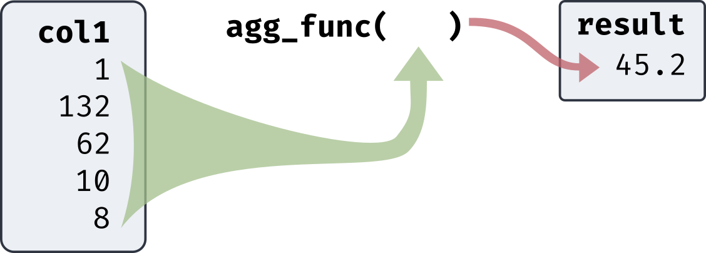

In Aggregate
Jed Rembold
Thursday, January 27, 2022
Announcements
HW2 is due tonight!
HW1 feedback has been posted on GitHub.
We’ll start in on Chapter 6 on Tuesday. I’ll update the schedule
over the weekend.
We are in person next Tuesday!
Polling today: www.PollEv.com/jedrembold441
Understanding Check
Suppose I have a table which was created as seen to the right, which
contains information on spheres formed of different materials. If I then
ran the below query to compute the radius of each of the spheres, what
would the resulting data type be?
CREATE TABLE rev (
material_name TEXT,
ball_mass INT,
mat_dens DECIMAL(5,3)
);
SELECT
||/(ball_mass / mat_dens / (4/3*3.14))
FROM rev;
Integer
Numeric
Real
Double Precision
Bulk Column Operations
SQL also gives you an easy method to perform calculations between
all the numbers in a column
Commonly called aggregate functions as they return only a
single output from many inputs
All the rows in the specified column are treated as the inputs
Because aggregate functions just return a single value, you can’t
generally mix them with selections that would return multiple rows
SQL selections return actual table objects, so row and column
numbers need to remain equal
Called on a specific column by placing the column name inside the
parentheses

Common Basic Aggregates
Many common aggregate functions are geared around determining
descriptive statistics
Unless otherwise specified, NULL values
are ignored in the calculations
avg(col)Finds the average or mean of a column
sum(col)Computes the sum of a column
count(*)Computes the number of input rows in the table
count(col)Computes the number of non-null input rows in that column
max(col)Finds the maximum value in a column
min(col)Finds the minimum value in a column
Note: You can not filter in
WHERE directly off of aggregated values
Aggregate Types
Like other calculations, the output type of your aggregate function
will depend on the type of the original column
avg(col)int or numeric → numeric
float of any type → double precision
sum(col)smallint or int → bigint
bigint or numeric → numeric
float → corresponding float
count(*)bigint
count(col)bigint
max(col)same as input
min(col)same as input
WITHIN GROUP Functions
All WITHIN GROUP functions entirely
ignore NULL values
Postgres offers you two options for determining percentile
locations:
percentile_cont is best used for
continuous values
Should the percentile land between two data points, they will be
averaged
percentile_disc is best used for
discrete values
Will return the last actual bit of data before the percentile
split
Postgres also offers a function to find the mode of a distribution
(not in standard SQL)
mode()No value needs to go within the parentheses
If multiple values have the same count, the first encountered in the
table is chosen (so the ordering still matters)
WITHIN GROUP Types
The types of the WITHIN GROUP aggregate functions are fairly
straightforward
percentile_cont(f)double precision
percentile_disc(f)Same as ordered column
mode()Same as ordered column
Queries to Tables
Sometimes, especially as we continue to build sophistication in our
queries, you may want to save the output of a query to another database
table
This can give you a multistep process in approaching more
complicated actions
Sometimes useful to use a temporary table as well by adding
the TEMP keyword
Only exists until you close out the session
To set a table to a query output, use the
AS keyword
CREATE TEMP TABLE my_temp_table AS (
SELECT col1, col2, ... FROM existing_table
);
Prolonged Example
I want to build up a box-plot of the distribution of land area
percentages across all counties in the US
Additionally, I’d like a record of all the outliers on the low end
of the distribution
Boxplot Illustration